A juicio de Hernando , es necesario seguir avanzando en la reforma laboral a fin de crear más empleo , rebajar la tasa de temporalidad y combatir la siniestralidad en el trabajo.
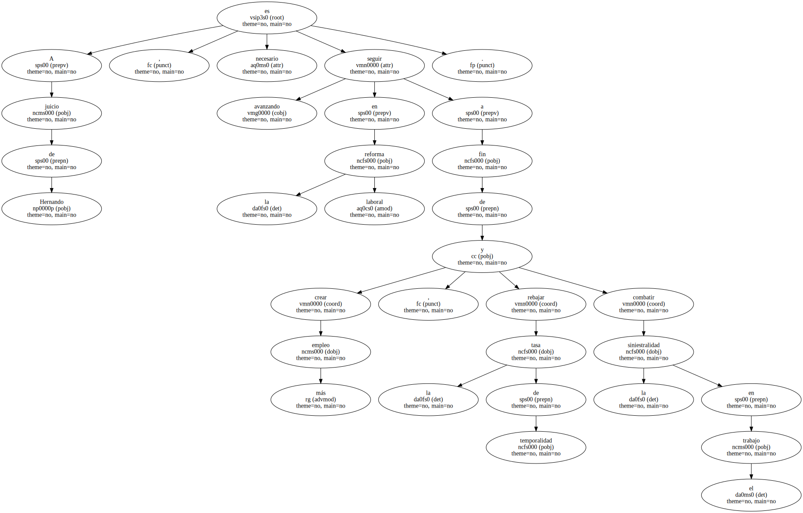El Komercni Banka ( Banco Comercial ) , uno de los cuatro bancos más grandes de la República Checa , anunció hoy que despedirá a 2.300 empleados más antes de finales del año dentro del proceso de saneamiento de la entidad estatal.
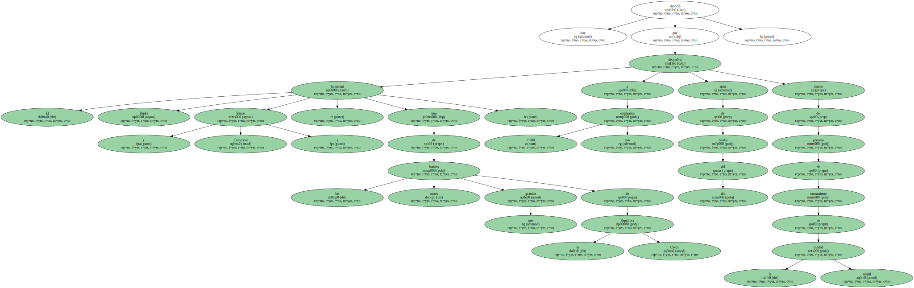El director del banco , Radovan Vrava , señaló que el motivo principal es la reestructuración del banco y no sólo la reducción de los costes.

El Estado dispone del 60 por ciento de las acciones del Komercni Banka y el Gobierno checo quiere comenzar el proceso de privatización de este banco ya en este año y terminarlo en septiembre del 2001.
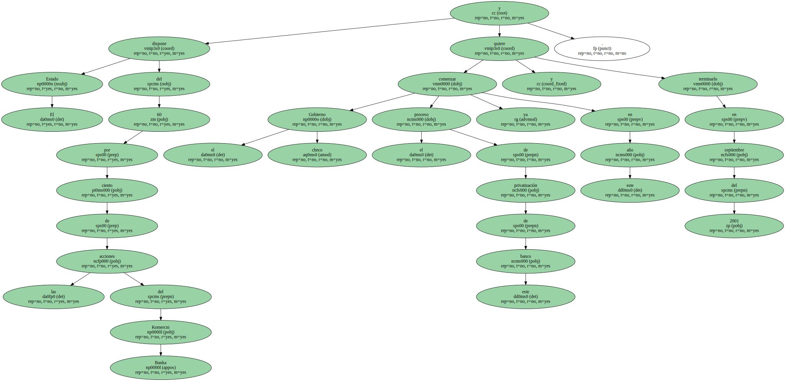Otro de los objetivos es evitar que se repitan los errores del pasado , que obligaron al Gobierno a comprar créditos dudosos por un valor de 60.000 millones de coronas ( unos 1.500 millones de dólares ).
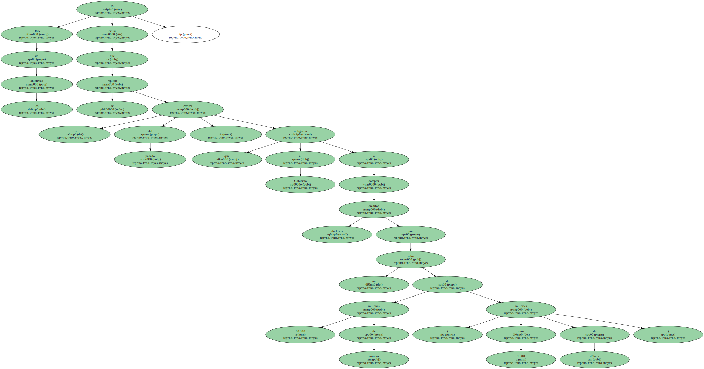Esto permitirá al banco sanear su portafolio , que es condición básica para continuar en su privatización.
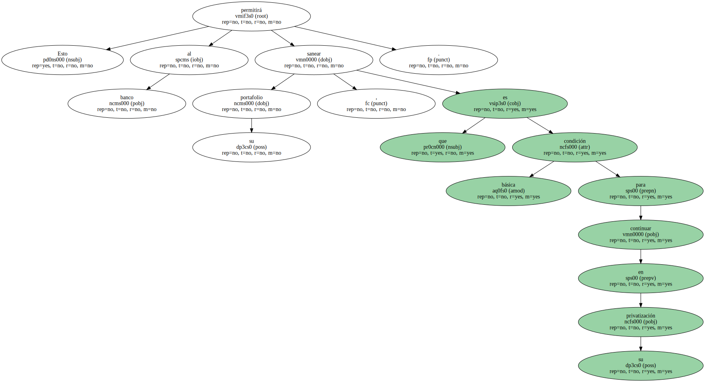La nueva dirección del banco está trabajando en recuperar el prestigio de la institución debido al escándalo por la violación de los límites de crédito en sus negocios con las empresas austriacas C. L. Tradung y otras , que supusieron pérdidas al banco de unos 200 millones de dólares el año pasado.
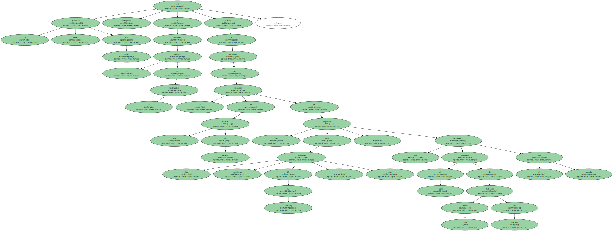Ese escándalo provocó amplios cambios de directivos a todos los niveles , desde su director general y presidente Jan Kollert y otros miembros de la dirección hasta personal medio.
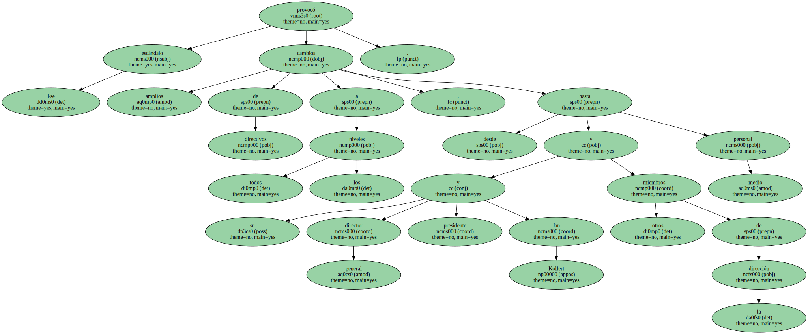El Komercni Banka tenía una plantilla de 13.487 empleados a fines de 1999 , 470 fueron despedidos durante el primer trimestre del presente año y otros 170 funcionarios fueron trasladados a una filial.
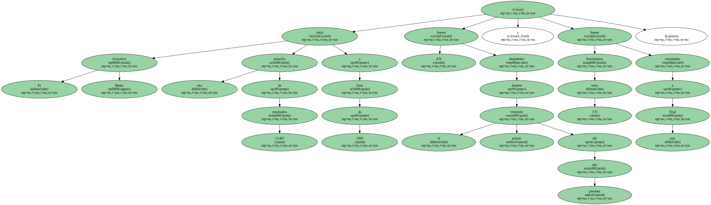La reestructuración de los otros bancos checos se está acompañando por la reducción del personal.
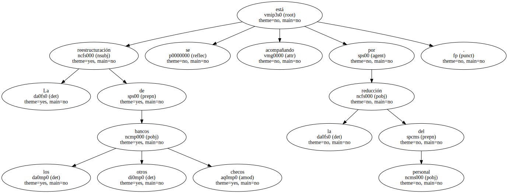La Caja Checa de Ahorros , ya comprada por el Erste Basnk de Austria , ha reducido su plantilla desde 18.700 en 1996 a los actuales 15.100 y tiene planeado reducirlo a 14.000 antes del fin del año.
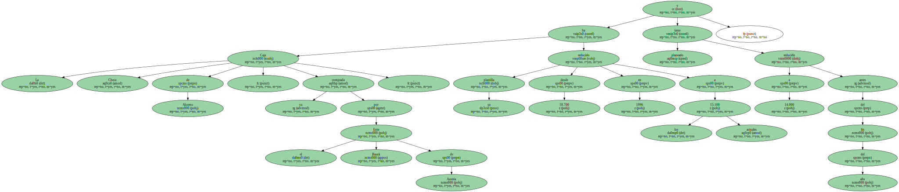También el Banco Comercial Checoslovaco ( CSOB ) , adquirido por el banco belga KBC y el Banco de Inversiones y Postal ( IPB ) ( de Nomura ) preparan una reducción moderada de sus plantillas.
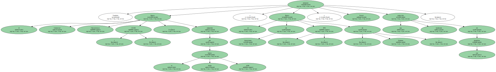La reducción de plantilla en los últimos dos años en estos cuatro bancos ha sido de alrededor de 8.000 funcionarios , pero siguen teniendo un poco menos de 50.000 empleados.
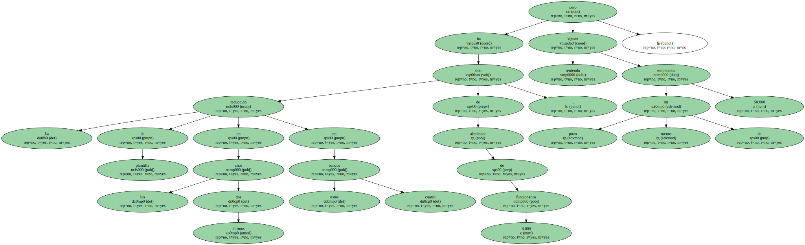La empresa canadiense Alcan Aluminium anunció el jueves que ha llegado a un acuerdo de principio para su fusión con la suiza Algroup que establece el cambio de 17.1 acciones de Alcan por cada una de la empresa helvética.
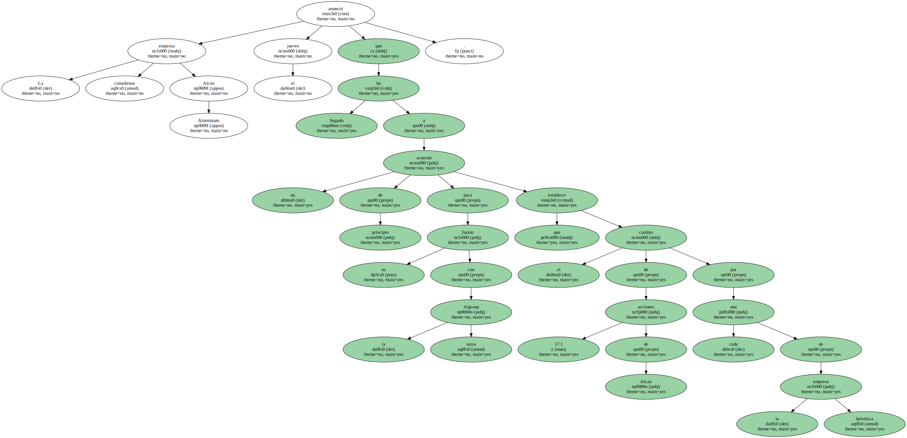El acuerdo también supone que los accionistas recibirán un pago de capital de 90 francos suizos ( 53 dólares ) y un dividendo especial de 135 francos suizos ( unos 80 dólares ) por cada acción de Algroup.
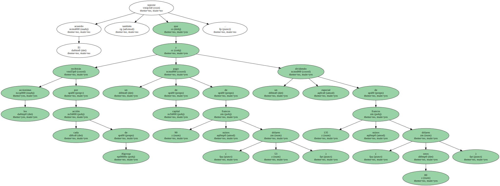El dividendo especial estará condicionado a la entrega para el intercambio con Alcan del 67 por ciento de las acciones en circulación de Algroup.
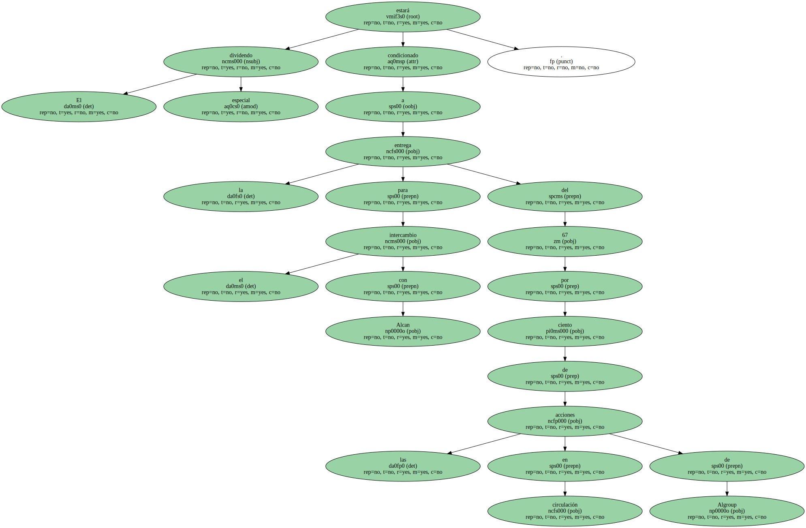De llevarse a cabo , la fusión creará una sociedad con ingresos combinados de 12.400 millones de dólares mientras que los beneficios económicos inmediatos supondrán al menos un ahorro de 150 millones de dólares.
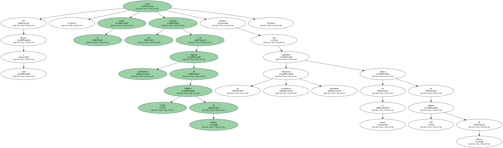El acuerdo se ha conseguido después de que Alcan se asegurase el apoyo de BZ Group Holding Limited , uno de los principales accionistas de Algroup.
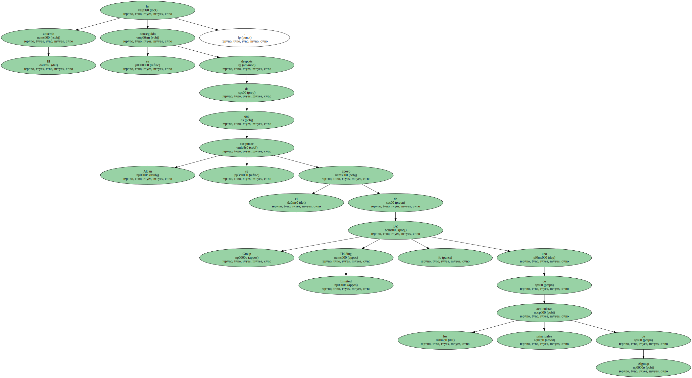BZ Group Holding Limited proporcionará el 34 por ciento de las acciones en circulación de Algroup para el intercambio con Alcan.
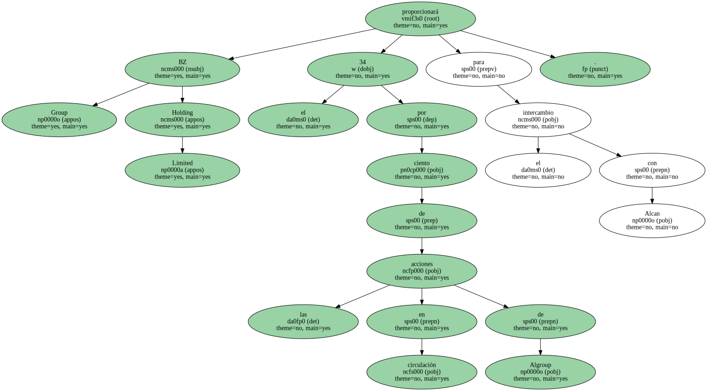A través de un comunicado de prensa , el presidente de Alcan , Jacques Bougie , señaló que " estoy seguro que esta fusión proporcionará un significante valor a los accionistas y espero fusionar las operaciones de Algroup y Alcan en una nueva industria líder a nivel global en el sector del aluminio y el embalado ".
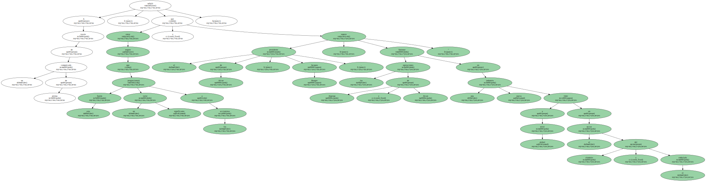Por su parte , el director ejecutivo de Algroup , Sergio Marchionne , dijo que " la nueva compañía estará en mejor posición para servir las necesidades de sus clientes ".
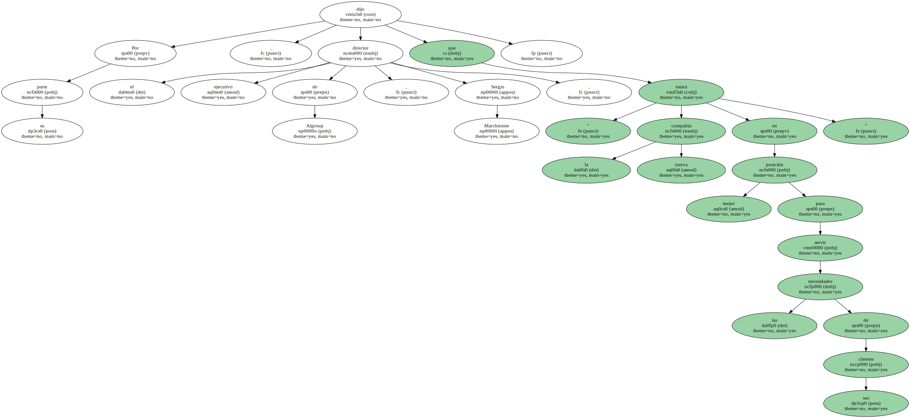Alcan es una de las mayores empresas del mundo dedicada a la producción de aluminio.
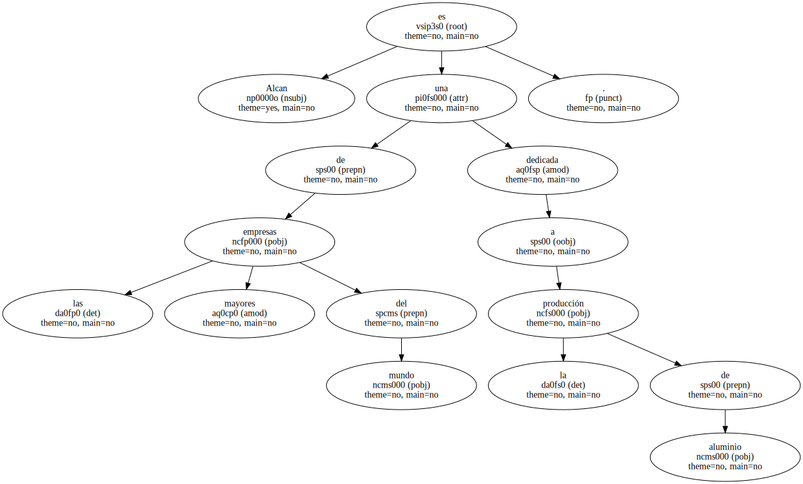Cuenta con operaciones en 30 países y emplea a alrededor de 30.000 personas para la producción de aluminio y productos derivados.
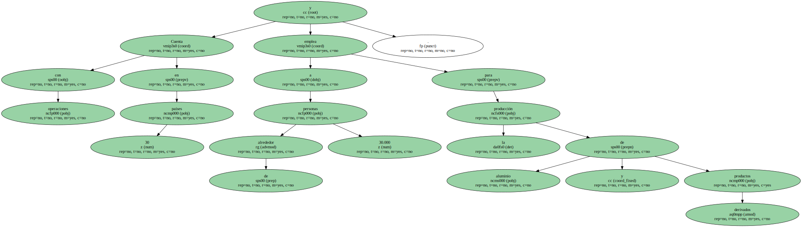Algroup , presente en 18 países y con 23.000 empleados , opera en el sector de la producción de aluminio y el empaquetado , con una fuerte presencia en el sector de la industria del transporte y del embalaje de productos alimentarios , cosméticos y farmacéuticos.
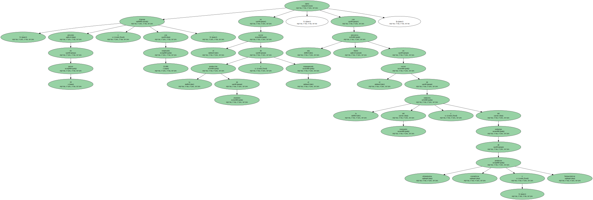